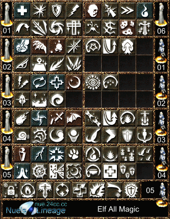
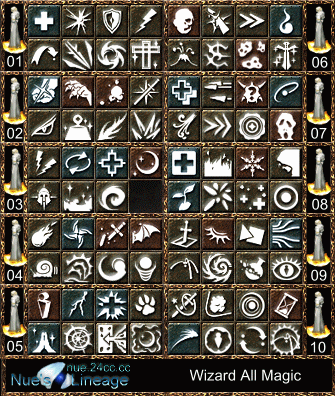
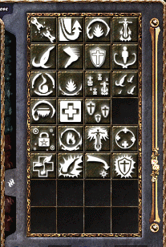

|
2002年5月31日
妖精新魔法資料
英文來源：Lineage
Compendium
中文翻譯：台灣-勝利女神-七色
|
|
共通(All)
|
火屬系Fire
|
水屬性Water
|
風屬性Wind
|
地屬性Earth
|
|
Level
1
|
魔法抵抗resist
magic (5/0)
在一小時內加10%的MR
+10% to MR for 1 hour
心體轉換body
to mind (0/5)
花5HP以加2MP
+2 MP
指定傳送迷幻森林之母teleport
to mother tree (5/0)
teleport to mother tree
|
|
Level
2
|
通暢精神clear
mind (15/0)
30分鐘內+5精神+5
to WIS for 30 minutes
元素抵抗resist
element (10/0)
在一小時內+10%元素抗性+10%
to elemental resistance for 1 hour
|
|
Level
3
|
回歸自然return
to nature (20/0/1)
回復所有的元素召喚強化(類似相消,但應只對元素魔法有效)break
summon or tame
blood
to soul (0/50)
心體轉換加強版+20
MP
|
抵抗火屬性resist
fire (15/0)
一小時內增加火抗性for
1 hour, increased fire resistance
擬似火焰武器fire
weapon (10/0)
10分鐘內附與武器火屬性增加亂數傷害for
10 min, increased melee damage
|
抵抗水屬性resist
water (15/0)
一小時內增加水抗性for
1 hour, increased water resistance
|
抵抗風屬性resist
wind (15/0)
一小時內增加風抗性for
1 hour, increased wind resistance
似風神射wind
shot (20/0)
增加弓的命中及傷害力increase
in bow hit and damage
風之疾走wind
walk (15/0)
30分鐘內加快行走速度for
30 min, increased walking speed
|
抵抗地屬性resist
earth (15/0)
一小時內增加地抗性for
1 hour, increased earth resistance
大地外表earth
skin (10/0)
一小時內增加AC
for 1 hour, increased AC
entangle (20/0/1)
3分鐘內減少行走速度for
3 min, decreased walking speed
|
|
Level
4
|
魔法消除erase
magic (50/0/2)
消除魔法效果erases
magical effects
|
召換火元素summon
fire elemental (30/0/2)
一小時內召換火元素for
1 hour, summon fire elemental
祝福之火bless
of fire (30/0)
30分鐘內PARTY成員增加亂數傷害for
30 min, party gets increased melee damage
|
召換水元素summon
water elemental (30/0/2)
一小時內召換水元素for
1 hour, summon water elemental
自然接觸nature
touch (30/0)
回復所有HP
heal all HP
|
召換風元素summon
wind elemental (30/0/2)
一小時內召換風元素for
1 hour, summon wind elemental
暴風之眼eye
of the storm (30/0)
30分鐘內PARTY成員增加命中及傷害力for
30 min, party gets increased missile hit rate and damage
|
召換地元素summon
earth elemental (30/0/2)
一小時內召換地元素for
1 hour, summon earth elemental
地之束縛earth
bind (30/0)
1分鐘內目標無法攻擊for
1 minute, target cannot attack
|
|
Level
5
|
沉靜之區area
of silence (100/0/5)
在一分鐘之內所指定區域無法施法no
magic can be used for 1 minute in affected area
|
召換烈火元素summon
flame elemental (50/0/3)
一小時內召喚烈火元素for
1 hour, summon flame elemental
烈焰武器burning
weapon (20/0)
10分鐘內附與武器火屬性增加亂數傷害for
10 min, increased fire melee damage
|
召換冰元素summon
ice elemental (50/0/3)
一小時內召喚冰元素for
1 hour, summon ice elemental
自然祝福nature
blessing (20/0)
恢復PARTY內成員HP
heal all of party's HP
自然呼喚call
of nature (120/0/3)
將對像復活在HP全滿MP=0的情況下
ressurects target with full HP and 0 MP
|
召換暴風元素summon
storm elemental (50/0/3)
一小時內召喚暴風元素for
1 hour, summon storm elemental
暴風神射storm
shot (20/0)
十分鐘內增加弓的命中及傷害力for
10 min, increased missile hit rate and damage
暴風疾走storm
walk (10/0)
傳送至畫面任一處teleport
to any location on the screen
|
召換鋼鐵元素summon
iron elemental (50/0/3)
一小時內召喚鋼鐵元素for
1 hour, summon iron elemental
鋼鐵外表iron
skin (20/0)
15分鐘內增加AC
for 15 minutes, increased AC
|
1. 共同指的是不管選擇那一屬性均可學習該魔法
2. 魔法翻譯名稱為作者暫譯..正式名稱及校果請待後續消息及橘子翻譯
3. 妖精每10級可學習一個等級之魔法
4. (100/0/5)指的是花費100MP/0HP/5魔法寶石
5. 翻譯不佳處請見諒.
法師新魔法資料
英文來源：Lineage
Compendium
中文翻譯：天堂．真相
18種新魔法加入了韓國測試伺服器的說明檔案中，以下是其內容：
| 名稱 |
相性 |
消耗 |
持續時間 |
對象 |
效果 |
| 等級1 |
神聖武器
(Holy Weapon) |
中立 |
10/0 |
10分鐘 |
玩家，NPC |
令武器神聖，增加對不死系怪物的傷害 |
| 等級2 |
減少重量
(Decrease Weight) |
中立 |
20/5 |
15分鐘 |
施法者 |
減少道具的重量 |
| 等級3 |
弱抗性
(Weak Element) |
中立 |
8/0 |
即時 |
玩家，NPC |
檢查目標對那一種屬性較弱 |
| 等級4 |
反擊魔法
(Countermagic) |
中立 |
30/10/1 |
10秒 |
玩家，NPC |
閃避下一個魔法（10秒內） |
冥思
(Meditation) |
中立 |
30/25 |
15分鐘 |
玩家，NPC |
加快回復MP，但在移動或戰鬥時停止回覆MP |
| 等級5 |
吸收魔力
(Mana Drain) |
中立 |
45/20 |
15分鐘 |
玩家，NPC |
吸取目標的MP |
黑暗
(Darkness) |
中立 |
15/5/1 |
10秒 |
玩家，NPC |
盲目標 |
| 等級6 |
弱化
(Weakness) |
邪惡 |
30/20/1 |
3分鐘 |
玩家，NPC |
減少目標的戰鬥能力（力量和傷害） |
祝福武器
(Bless Weapon) |
中立 |
30/0 |
10分鐘 |
玩家，NPC |
祝福目標的武器 |
| 等級7 |
魔法地雷
(Magical Mine) |
中立 |
30/0/1 |
永久 |
除牆外任何地點 |
留下一個魔法陷阱 |
疾病
(Disease) |
邪惡 |
40/15/2 |
3分鐘 |
玩家，NPC |
減少目標的力量與體質 |
| 等級8 |
生命之泉
(Life Stream) |
中立 |
50/0/1 |
10分鐘 |
全隊伍 |
增加隊伍的回復HP速度 |
沈靜
(Silence) |
中立 |
33/10/1 |
3分鐘 |
玩家，NPC |
在施法範圍內不可使用魔法 |
| 等級9 |
透視
(Inner Sight) |
中立 |
55/10/1 |
10秒 |
施法者 |
增可施法者的可視範圍，可看穿所有障礙物 |
藥水無效
(Decay Potion) |
中立 |
60/20/2 |
1分鐘 |
玩家，NPC |
目標不能使用藥水 |
| 等級10 |
絕對屏障
(Absolute Barrier) |
中立 |
80/10/3 |
30秒 |
施法者 |
在施法者周圍設立無敵的屏障，但施法者不能移動 |
位置轉換
(Change Positon) |
中立 |
100/20/3 |
即時 |
玩家 |
與目標玩家轉換位置 |
加強集體傳送術
(Greater Mass Teleport |
中立 |
120/30/5 |
即時 |
與施法者8格內的玩家 |
集體傳送範圍內的玩家，無視血盟 |
妖精與法師魔法全圖示列表
來源：Nue's
Lineage
妖精的魔法總欄,魔法欄位總數88種,由於3級精靈魔法以上的必須選擇屬性,因此實際魔法總數超過88種

法師的魔法總欄,魔法欄位總數80種

妖精魔法在魔法視窗上的位置（妖精魔法在法師魔法等級7後的位置）

韓國測試伺服器5月30日更新內容
原文：韓國天堂官方網站更新公告
中文翻譯：寶嘉康蒂ソ網站
5月30日(四)大家所其期待的Episode 11魔法的城市已加入測試伺服器中了。
它的位置是在火龍窟的東北方，是由雪地、戰爭的廢墟和荒涼的原野所構成的。
Episode 11所增加的事項如下：
1. 象牙塔
古代的建築物是一座形狀特異的8層魔法塔。
1~3樓是法師的研究所，魔法可在這買賣還可以在這學習魔法和神殿的功能一樣。
4樓以上會出現強大的怪物。
2. 象牙塔村
象牙塔附近的村莊。
3. 水晶洞窟
在雪地中的地下3層洞窟，主要是由冰所構成的。
4. 新增的魔法
新增了屬性攻擊魔法、輔助魔法和妖精專用的元素魔法。
一部份可以在象牙塔中買到，剩下來的可以在怪物身上得到。
5. 元素魔法
新增妖精的元素魔法。
一部份可以在象牙塔中買到，剩下來的可以在怪物身上得到。
元素魔法可以在象牙塔和迷幻森林之母學習。
元素魔法有火、水、風、地屬性系列和其它的魔法。
元素魔法詳細說明可以由象牙塔中的NPC得知。 |